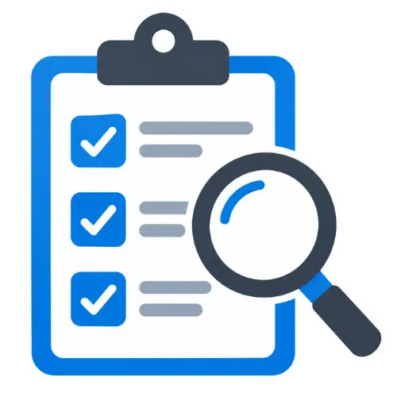
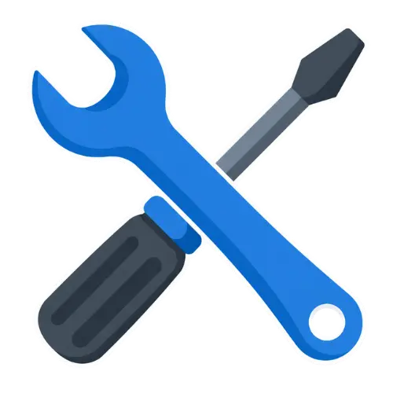
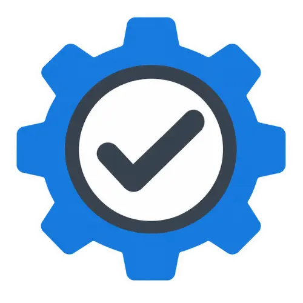
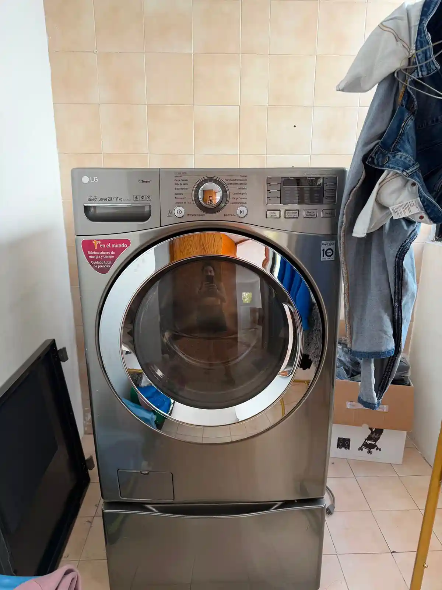
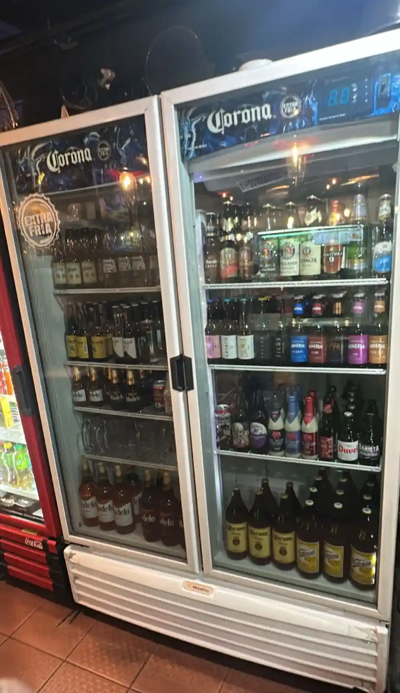

Atención ágilCuéntanos la falla por WhatsApp.
Servicio técnico en CDMX
Reparación de línea blanca en CDMX y área metropolitana
Diagnóstico, mantenimiento y reparación de equipos domésticos y de refrigeración comercial.
Advance
Servicio técnico para los equipos que forman parte de tu día
Realizamos diagnóstico, mantenimiento y reparación de línea blanca y refrigeración comercial, atendiendo distintas marcas y modelos en Ciudad de México.
Servicio profesionalDiagnóstico antes de intervenir.
Trato cercanoExplicamos la falla y la solución.
Hogar y negocioEquipos residenciales y comerciales.
Catálogo de servicio
Equipos que reparamos
Servicio técnico para equipos domésticos y comerciales.
Atención completa
Servicios de reparación y mantenimiento

01Diagnóstico
Revisión del equipo para identificar el origen de la falla antes de realizar el servicio.

02Reparación
Intervención de componentes mecánicos, eléctricos o electrónicos según la falla detectada.

03Mantenimiento
Limpieza, revisión y ajuste para conservar un funcionamiento adecuado y prevenir problemas.
Proceso claro
Así trabajamos
- 01
Contáctanos
Cuéntanos qué equipo presenta la falla.
- 02
Revisamos tu equipo
Evaluamos su funcionamiento y el origen del problema.
- 03
Explicamos la solución
Conoces la falla antes de realizar el servicio.
- 04
Realizamos y verificamos
Atendemos el equipo y comprobamos su funcionamiento.
Casos representativos
Trabajos realizados
Revisiones, mantenimientos y reparaciones en equipos domésticos y comerciales.
Amplia compatibilidad
Marcas que atendemos
Reparamos equipos de distintas marcas y modelos, tanto domésticos como comerciales.
Soluciones para cada espacio
Refrigeración residencial y comercial
Hogar
Tu rutina, nuevamente en marcha
Lavadoras, lavasecadoras, refrigeradores, estufas, hornos y centros de lavado.
Solicitar atención ↗
Negocio
Refrigeración para tu operación
Vitrinas, mesas frías, exhibidores, cavas y equipos comerciales.
Consultar servicio ↗
Cobertura
Servicio de reparación de línea blanca en Ciudad de México y área metropolitana
Tecacalo, Coapa, Adolfo Ruíz Cortínez,Coyoacán, 04630, Ciudad de México, CDMX.
Contáctanos para confirmar disponibilidad en tu zona.
Dudas frecuentes
Preguntas frecuentes
Contacto
¿Tu equipo dejó de funcionar como debería?
Cuéntanos qué está pasando y recibe atención para diagnóstico, mantenimiento o reparación.